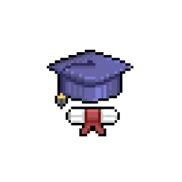
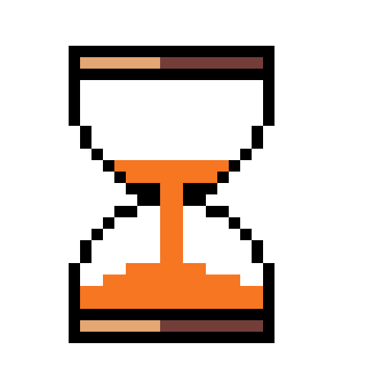

Minha jornada no mundo da tecnologia começou com a influência do meu primo, que me apresentou à programação. Com a ajuda de um curso de lógica de programação na Udemy, desenvolvi uma verdadeira paixão pelo desenvolvimento de software.

Atualmente, trabalho como Técnico em Soluções Digitais na Robert Bosch, estou cursando o técnico na Escola Senai Roberto Mange e estou no segundo semestre de Análise e Desenvolvimento de Sistemas na UNIP. Essas experiências têm sido fundamentais para aprofundar meu conhecimento em tecnologia da informação e fortalecer minha paixão pela área.

Quero me tornar um desenvolvedor back-end para criar soluções funcionais que melhorem a vida das pessoas. No entanto, também tenho interesse em front-end pela sua parte dinâmica e interativa. Por isso, estou considerando me tornar um desenvolvedor fullstack, integrando essas duas áreas que me fascinam.